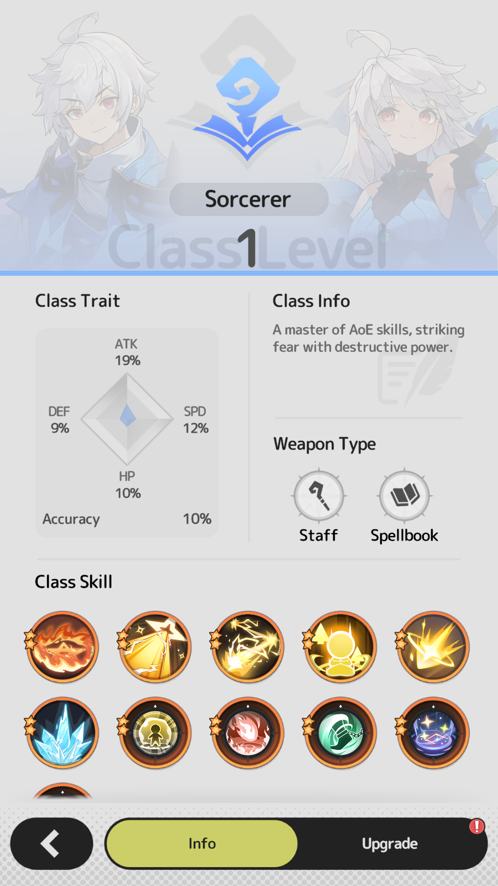
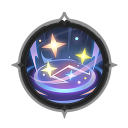

Thuật Sư (Sorcerer)
TỔNG QUAN
Những Hủy Diệt Giả (Destroyer) điều khiển sức mạnh nguyên tố, xuất sắc trong việc quét sạch chiến trường bằng những cơn bão ma thuật tráng lệ. Với trượng và sách phép trên tay, họ có thể tung ra sát thương hủy diệt cực lớn trong chớp mắt.
Được ca ngợi là dòng thác nguyên tố biết đi trên chiến trường, mỗi phép thuật họ tung ra đều gây tổn thương nặng nề cho kẻ địch, khiến họ trở thành lõi hỏa lực rực rỡ nhất trong bất kỳ đội hình nào.
Dù DEF (Phòng Thủ) của họ tương đối thấp, họ tận dụng khả năng di chuyển linh hoạt và khả năng kiểm soát chiến trường chính xác để tấn công từ khoảng cách an toàn. Dù là dọn dẹp quái nhỏ hay tập trung oanh tạc kẻ địch mạnh, Thuật Sư (Sorcerer) là chuyên gia không thể tranh cãi.
Khi nhiều sức mạnh nguyên tố đan xen và bùng nổ khắp chiến trường, đó chính là khoảnh khắc họ tỏa sáng rực rỡ nhất.

Kỹ Thuật Thuật Sư (Sorcerer)
| Biểu tượng | Tên | Loại | Mô tả | Hình Ảnh |
|---|---|---|---|---|

|
Fiery Star Trail | Sát Thương | Gây 2 lần sát thương Doom hệ Lửa cho tất cả kẻ địch trong khu vực hình tròn bán kính 3 ô xung quanh người thi triển. | |

|
Light of Dawn | Sát Thương | Gây 2 lần sát thương Doom hệ Ánh Sáng cho tất cả kẻ địch trong khu vực 1x8 ô phía trước người thi triển. | |

|
Lightning Chain | Sát Thương | Gây 1 lần sát thương Ánh Sáng cho 1 kẻ địch trong phạm vi 4 ô của người thi triển. Hiệu ứng sau đó lan sang 1 kẻ địch ngẫu nhiên trong phạm vi 4 ô của mục tiêu, tối đa 9 lần. Mỗi kẻ địch chỉ có thể bị trúng hiệu ứng lan 1 lần. | |
| Energy Burst | Tự Buff | Kỹ Thuật gây sát thương tiếp theo của bạn được tăng Độ Chính Xác và gây thêm 50% sát thương. | ||
| Flickering Stars | Sát Thương, Giải Buff | Chọn 1 ô trong phạm vi 6 ô của người thi triển. Gây 1 lần sát thương Ánh Sáng cho tất cả kẻ địch trong phạm vi 1 ô quanh ô mục tiêu và giải 1 buff ngẫu nhiên của chúng. | ||

|
Frosty Nova | Sát Thương, Hiệu Ứng Xấu | Chọn 1 ô trong phạm vi 3 ô của người thi triển. Gây 1 lần sát thương Nước cho tất cả kẻ địch trong khu vực hình vuông 1 ô quanh ô mục tiêu, với 30% tỉ lệ cơ bản gây Đóng Băng trong 1 lượt. |
Bùa Thuật Sư (Sorcerer)
| Biểu tượng | Tên | Loại | Mô tả | Hình Ảnh |
|---|---|---|---|---|

|
Void Bubble | Khiên, Buff | Khi HP của người thi triển lần đầu tiên trong trận chiến giảm xuống dưới 50%, tạo khiên cho người thi triển dựa trên HP tối đa trong 2 lượt và tăng Né Tránh trong 2 lượt (không thể bị giải). | |

|
Raging Wildfire | Thiêu Đốt | Có 20% tỉ lệ gây Thiêu Đốt cho các ô trong phạm vi khi thi triển Kỹ Thuật hệ Lửa. | |

|
Wind's Shadow | Sát Thương, Debuff | Có 30% tỉ lệ gây thêm 1 lần sát thương Gió, và 50% tỉ lệ cơ bản làm chậm hành động của mục tiêu đi 20% sau khi gây sát thương Gió 3 lần cho một kẻ địch bằng Kỹ Thuật. | |
 |
Elemental Harmony | Buff | Với mỗi nguyên tố trong số các Kỹ Thuật đã trang bị gây sát thương, tăng Thông Thạo Nguyên Tố của người thi triển. Cộng dồn tối đa 4 lần. | |

|
Lightning Mystery | Sát Thương | Mỗi khi Kỹ Thuật của người thi triển gây sát thương cho kẻ địch, có 30% tỉ lệ kích hoạt Thunder Strike gây thêm 1 lần sát thương Ánh Sáng. |